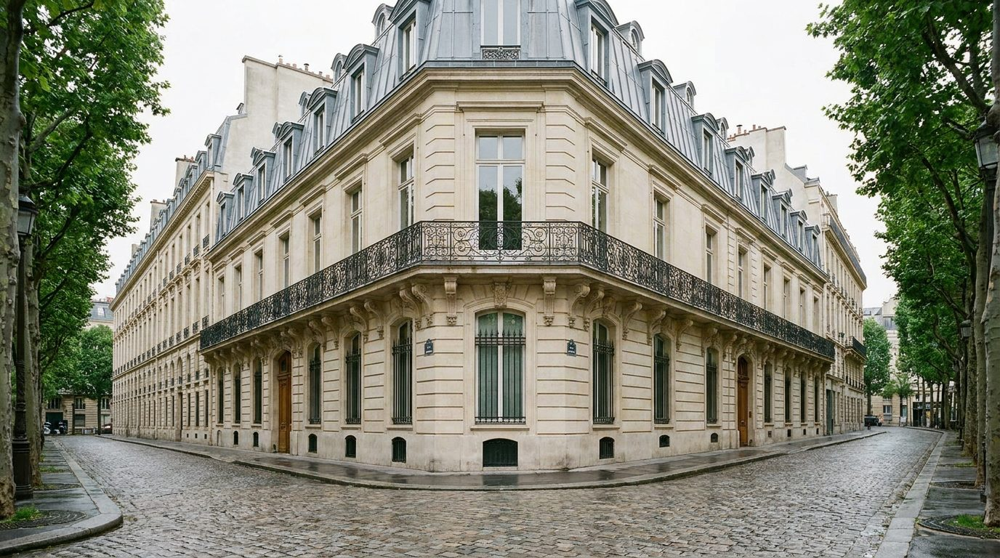
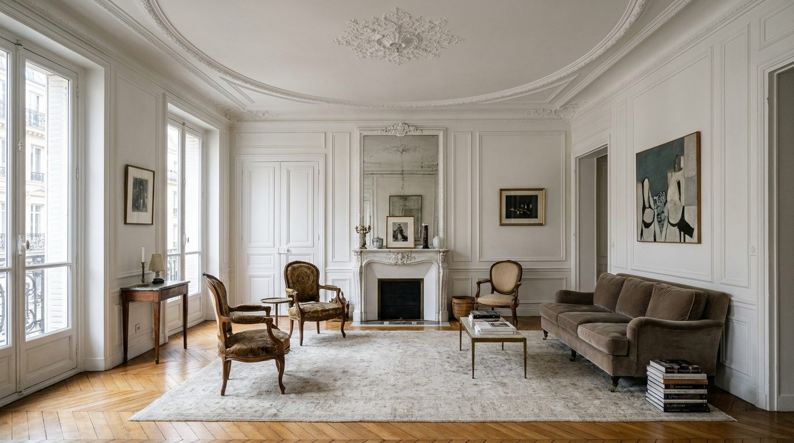

Atlante · FR-01 · Francia · Île-de-France
Appartamento haussmanniano canonico
Esempi · esterno e interno


Perché funziona
è il codice visivo che il pubblico associa al lusso parigino; funziona per arredamento perché le boiserie fanno da quinta neutra e il parquet dà direzione prospettica alla composizione.
Architettura · elementi riproducibili
- HSP: piano nobile ≈ 3,20 m, piani alti ≈ 2,60 m (fonte: guide tecniche di ristrutturazione haussmanniana)
- Boiserie: pannelli a cornice con gola, dado 0,90–1,10 m; modanature a soffitto 8–12 cm; rosetta centrale
- Porte: doppio battente 2,20–2,50 m nelle enfilade; maniglie in ottone
- Camino: mensola marmo 1,20–1,50 m, specchio trumeau sopra 1,80–2,20 m
- Finestre: doppio battente 1,20–1,60 × 2,20–2,60 m, persiana interna, ringhiera in ferro
- Pavimento: chevron o point de Hongrie, rovere, doghe 8–12 cm
Luce
laterale diagonale da due finestre, 10:00–15:00, cielo coperto o velato; 5200–5600 K; ombre morbide, nessuna macchia di sole sul muro.
Prompt di generazione (EN)
Interior photograph of a Parisian Haussmann apartment living room, 3.2 m ceiling, white painted boiserie panels with fine mouldings and a ceiling rose, honey oak herringbone parquet, white marble fireplace with trumeau mirror, tall double casement windows with wrought-iron balcony, pale sage velvet sofa, brass floor lamp, low bookshelf. Soft directional daylight from the left, 5300 K, gentle falloff. 35 mm lens, f/4, tripod at 1.45 m, one-point perspective from the corner, colour-accurate sRGB, editorial furniture photography, no people, 4:5.
Errori tipici da controllaremodanature troppo spesse o duplicate a scala sbagliata; camino sottodimensionato rispetto al trumeau; parquet che gira a 90° rispetto alla finestra; soffitto basso che annulla la prospettiva.